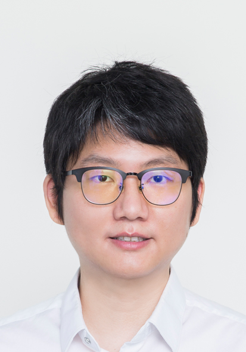

Executing tasks with changing dependencies
SAGE organizes multi-stage tasks. MorphStream adjusts concurrent execution based on runtime dependencies.
SAGE · ICML 2026 · MorphStream · SIGMOD 2023HUST · SYSTEMS RESEARCH
Task execution · Information maintenance · Online service control

Shuhao Zhang is a professor in the School of Computer Science and Technology at Huazhong University of Science and Technology (HUST). He leads a task under a major national science and technology project of China’s Ministry of Science and Technology. He received the NSFC Excellent Young Scientists Fund (Overseas) and was awarded support through the NSFC Research Fund for International Excellent Young Scientists (RFIS-II). Before joining HUST, he was an assistant professor at Nanyang Technological University and Singapore University of Technology and Design, and a postdoctoral researcher at Technische Universität Berlin.
His research focuses on data-intensive systems in dynamic environments. His group studies how systems can remain efficient, controllable, and reliable as task dependencies, available information, and runtime resources change. The group works on dependency-driven task execution, maintenance and reuse of evolving information, and online service control under resource constraints. It also studies how to compose mechanisms through explicit contracts and make state a first-class concern in execution.
Current work spans LLM inference, dynamic retrieval, and stateful data processing. Systems such as vLLM-HUST, ECPA, and StateAxis connect mechanism design, engineering, and evaluation on real workloads.
01 / RESEARCH
Task dependencies, data, and available resources change while systems are running. We study how systems can adapt to these changes in the way they execute tasks, maintain information, and manage online services.
Adapting to changes in tasks, information, and resources
Multi-stage inference
Concurrent and heterogeneous execution
Dynamic data and retrieval
Past results and external memory
Changes in load and capacity
Recovery and state migration
Define how extensions declare capabilities, join the system, are validated and isolated, and are removed.
Give execution and serving a consistent model of state ownership, layout, access, migration, and lifecycle.
Use vLLM-HUST to evaluate system mechanisms with real models, hardware, and workloads.
ECPA and StateAxis connect the three research directions through contracts for mechanisms and a shared model of state. Application workloads help us test how broadly these methods apply.
02 / SYSTEMS & RESULTS
SAGE organizes multi-stage tasks. MorphStream adjusts concurrent execution based on runtime dependencies.
SAGE · ICML 2026 · MorphStream · SIGMOD 2023GRACE reduces the cost of maintaining dynamic graph structures. BriskSeed and Neuromem study the reuse of search history and external memory.
GRACE · ICDE 2026 · Related systems (Chinese) →BidKV addresses memory pressure in LLM serving. Spacker supports state migration and resource adjustment while stream processing jobs are running.
BidKV · SC 2026 · Spacker · ICDCS 2025Systems and open-source projects (Chinese) · Full publication archive and PDFs →
03 / APPLICATIONS
We implement our methods in working systems and evaluate them on real workloads. Our current focus is vLLM-HUST, an inference engine for Chinese accelerators. We continue to share code for task execution, dynamic retrieval, state management, and evaluation.
Systems and open-source projects (Chinese)
Our faculty digital twin provides an ongoing question-answering workload for studying inference requests, memory updates, and retrieval. Other collaborations include power grid operations, inference for bioinformatics models, real-time industrial fault diagnosis, and low-latency audio and video communication. These applications help us test how our methods behave under different workloads, hardware, and reliability requirements.
Try the faculty digital twin ↗ · Paper on real-time industrial fault diagnosis
04 / PEOPLE & COLLABORATION
We welcome applications from prospective master’s and PhD students and long-term interns. Students can work on task execution, information maintenance, or online service control, and contribute to systems such as ECPA, StateAxis, and vLLM-HUST. Projects span problem analysis, mechanism design, implementation, and experiments on real hardware and workloads. We welcome backgrounds in distributed systems, operating systems, computer architecture, compilers, and performance optimization.
Applications and collaboration. Please email shuhao_zhang@hust.edu.cn with a short description of the problem you want to work on or your application needs. Students should include a CV, relevant project experience, or links to code.
HUST application portal. Select Computer Architecture (计算机系统结构) as your research direction.
05 / NEWS
06 / RESOURCES